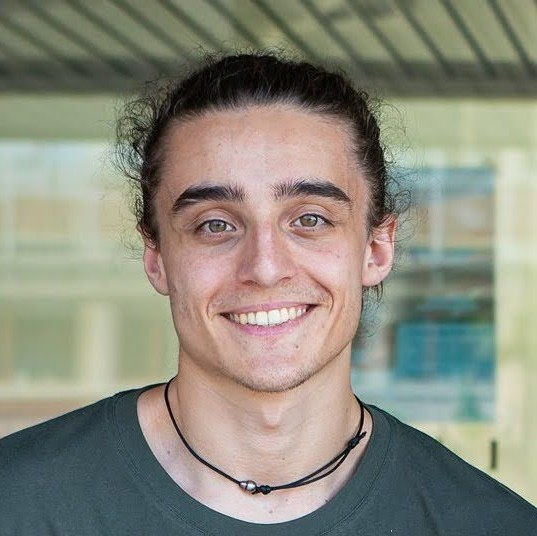

|  |
Arthur LonguefossePostdoctoral Researcher RIKEN IMS, Medical Data Deep Learning team arthur.longuefosse [at] riken.jp | gmail.com CV | Google Scholar | GitHub | LinkedIn |
|
I am currently a postdoctoral researcher at the RIKEN Center for Integrative Medical Sciences – Medical Data Deep Learning Special Team in Tokyo, Japan, which I joined in October 2025. Previously, I completed my PhD at the University of Bordeaux, France, where I worked on lung MR to CT synthesissing deep learning, with additional interests in medical imaging tasks such as segmentation, classification, and inpainting. |
Journal Articles
Generating high-resolution synthetic CT from lung MRI with ultrashort echo times: initial evaluation in cystic fibrosis Anatomical feature-prioritized loss for enhanced MR to CT translation Conference PapersMulti-modal Brain MRI Synthesis with nnU-Net: Exploring Segmentation Performance and Cross-Modality Relationships Adapted nnU-Net: A Robust Baseline for Cross-Modality Synthesis and Medical Image Inpainting Incorporating 3D Information in 2.5D Networks: Strategies for MR to CT Synthesis On the use of perceptual loss for fine structure generation : Illustration on lung MR to CT synthesis MR to CT synthesis using GANs: a practical guide applied to thoracic imaging Lung CT Synthesis Using GANs with Conditional Normalization on Registered Ultrashort Echo-Time MRI |
|
|
{kind=link}